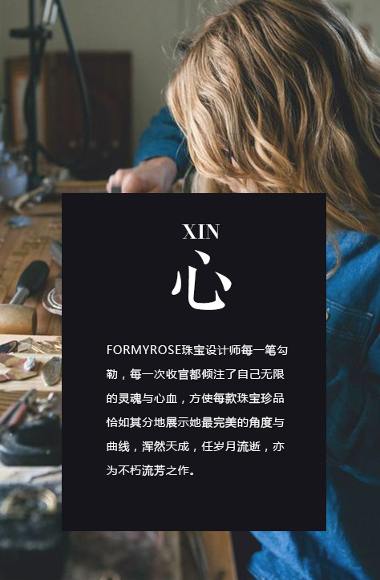

- 
美丽不会主动跃出，只会静静等待执着找寻她的人于是，我们的足迹遍布五湖四海，跋山涉水，
观云望气，无论是有“宝石王国”“印度洋上的明珠”和“最美岛屿”美称的斯里兰卡，还是有
“非洲之王”美名的坦桑尼亚、亦或是“桑巴天堂”巴西的米纳斯吉拉斯州。
我们始终选择最优质的矿区为您呈现最珍稀的宝石经过层层甄选，每颗举世无双的裸石经过洋流
潮汐的洗礼，蕴藉的华彩从FORMYROSE珠宝中璀璨绽放。
精美绝伦的宝石是珠宝的灵魂，然而任材质珍稀高贵若无巧夺天工的工艺，也无法给您带来最耀眼的视觉冲击。
FORMYROSE珠宝所有切工均采用三维千分尺调校精益求精挑战完美极限，并严格按照数字科学的方程式执行，切面更密集，角度更精细，既完整保了宝石的独特魅力，又保证了宝石精确的厚薄比例与对称性>
再经有数十年经验的手工艺师千百道工序的打磨与抛光，犹如罩在宝石上的神秘面纱缓缓揭开，华贵的光线交相辉映，绚烂的火彩更加卓越不凡。
MOSAIC
镶缀
宝石的镶嵌由内而外皆需超乎常人的精细与专注。如同中国古代捕蝉老人“用志不分，乃凝于神”，亦是FORMYROSE对镶嵌工艺师的极致要求，为达到此无与伦比的标准。
FORMYROSE镶嵌工艺师始终在高倍放大镜下或显微镜下进行宝石镶嵌。镶嵌不只是简单地把宝石放进网格，而要有唯美精致的思维，体态轻盈地使宝石隐嵌进表面，既不使整颗宝石下沉影响火彩，更要稳固宝石的同时，不致用力过甚而造成破坏，最大程度地呈现珠宝的浑然天成，优雅曲线。
PURE HANDMADE
GIA CERTIFICATE
GIA证书GIA美国宝石研究院是极具规模的全球知名非营利宝石学教育及研究机构。
作为历史悠久的学术机构，GIA旨在帮助人们了解宝石知识。GIA不仅提供专业的钻石知识，更提供钻石鉴定证书，让消费者放心购买。
GIA致力于保护钻石消费者，创立了4C标准和国际钻石分级系统™，并成为全球通用的钻石鉴定标准。
作为标准的创立者，GIA对宝石研究持续投入，在业界的权威性无出其右。
FORMYROSE对钻石的筛选可谓精益求精，并为每颗重量超过0.2克拉的中央钻石颁发鉴定书，作为恪守美国宝石学院4C标准的品质证明。
LOVE BOX
真爱礼盒
礼盒与产品的关系，虽不能买椟还珠，喧宾夺主，但亦需互相匹配，相得益彰。为了阁下尊贵的体验，FORMYROSE不计成本，甄选奢华高档材质经由FORMYROSE设计师倾心设计，以盛装您所期待的真爱惊喜。
这份爱的礼物是由外盒与内盒组成，并均有高档皮质材料制成，内部亦采用高级柔软皮料缝制，外盒的设计大气高贵轻轻取下上盖，顿时奢华高贵的内盒耀眼呈现，轻轻按下圆圆精致的金色按钮即可呈现静静躺在其中的FORMYROSE珠宝珍品，这即象征着为爱人许下的庄严承诺，相信此时，阁下即可迎接拥抱了。